Scene 036 · Approved
Bernard
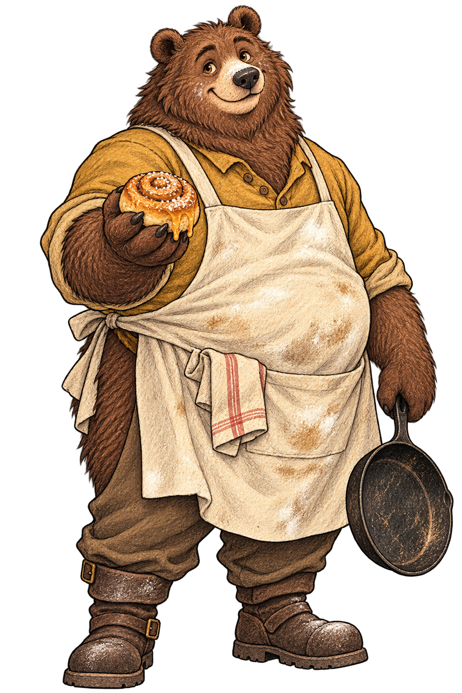
Download PNG · Tap the drawing to enlarge
Suggested placement · after paragraph 5
Bernard comes around the counter, crouches down until his eyes are level with yours, and holds out a honey bun. It’s still warm, and it’s the best thing you’ve ever tasted, no contest.
Scene 035 · Approved
Gilly
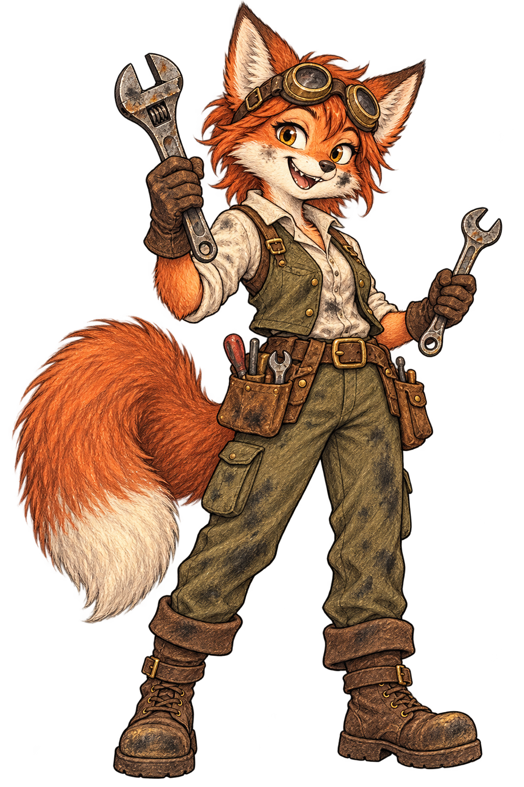
Download PNG · Tap the drawing to enlarge
Suggested placement · after paragraph 6
A fox-folk girl slides out from under the cart. She’s got red fur, a big bushy tail, goggles pushed up on her forehead, a smear of grease on her nose, and a wrench in each hand.
Scene 031 · Approved
Warm and Calm
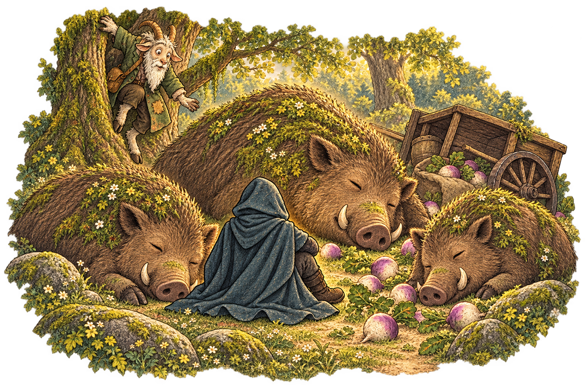
Download PNG · Tap the drawing to enlarge
Suggested placement · after paragraph 7
Gordo climbs down from his tree with his mouth hanging open.
Scene 040 · Approved
The First Syphon
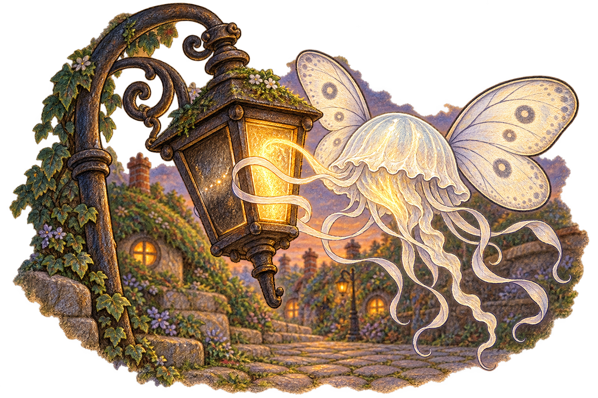
Download PNG · Tap the drawing to enlarge
Suggested placement · after paragraph 2
It drifts right up to the glow, wraps its ribbons around the light, and drinks. You can actually see the light flow into it. For a second the creature glows a little, and whatever it was drinking from goes dark.
Scene 057 · Approved
The Source
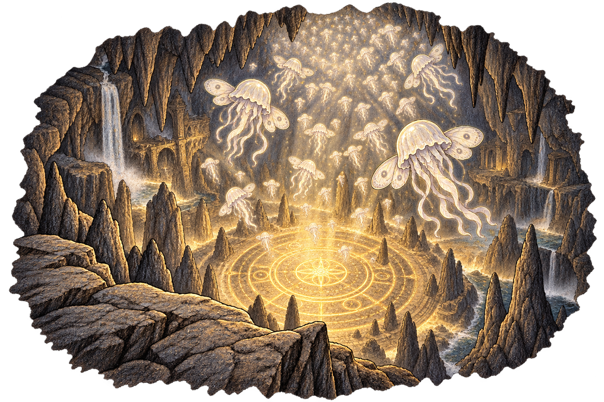
Download PNG · Tap the drawing to enlarge
Suggested placement · after paragraph 4
Syphons are rising up out of it one after another in a slow steady stream, like bubbles in a glass. There are already hundreds of them in here, hanging up near the ceiling as thick as fog.
Scene 037 · Approved
A Table at the Spoon
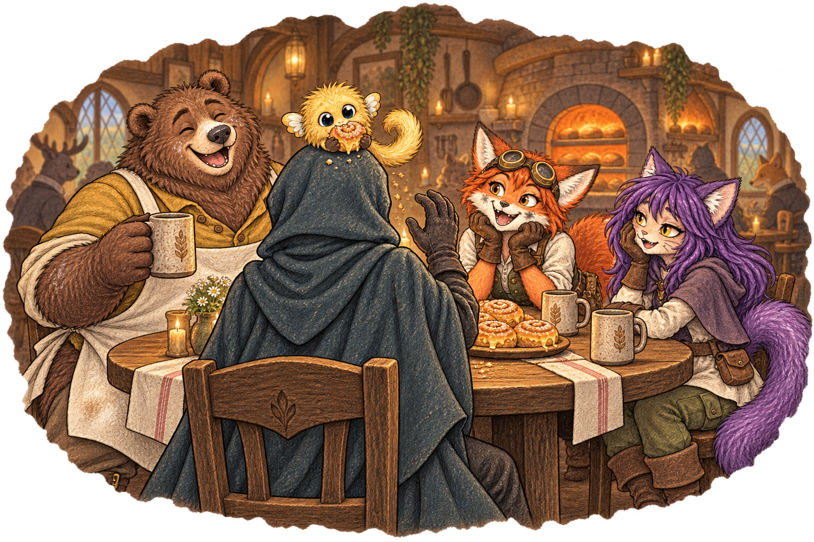
Download PNG · Tap the drawing to enlarge
Suggested placement · after paragraph 3
“That’s Honey,” Bernard says. “You can probably guess how he got the name. He’s a puffkin, doesn’t belong to anybody, just turned up a while back and started stealing my buns.” He watches Honey settle into your hair like it’s a nest. “Looks like he belongs to you now. Puffkins can’t stay away from magic, and you’re the most magic thing he’s ever seen.”
Scene 042 · Approved
Feeding Time
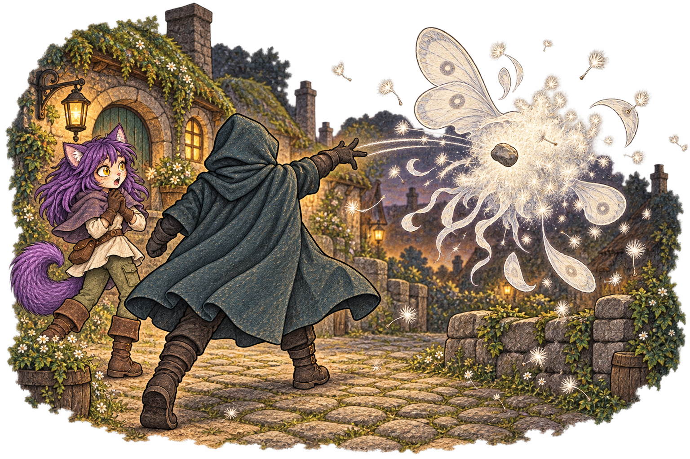
Download PNG · Tap the drawing to enlarge
Suggested placement · after paragraph 8
The rock goes straight through the syphon and it bursts apart like a dandelion when you blow on it. The pale fluff hangs in the air, swirls around, and slowly pulls itself back together a good ways farther off. It gives itself a little shake, then drifts away toward the hills like nothing happened, and the others follow it.
Scene 046 · Approved
Campfire
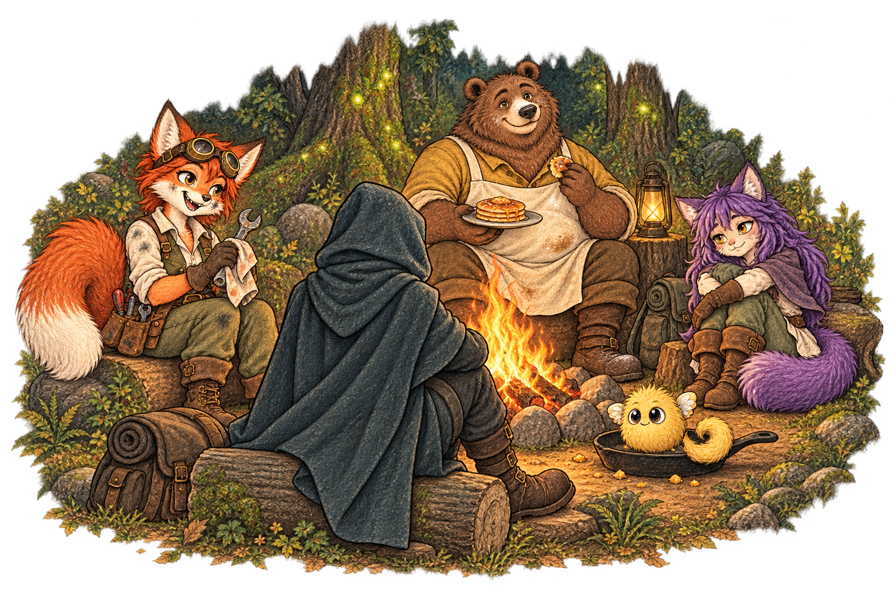
Download PNG · Tap the drawing to enlarge
Suggested placement · after paragraph 1
Bernard builds a fire the regular way, with sticks. Then he pulls out the frying pan, and that’s the end of anybody worrying about anything for a while. Honey eats four pancakes and then sits in the pan.
Scene 056 · Approved
The Crack
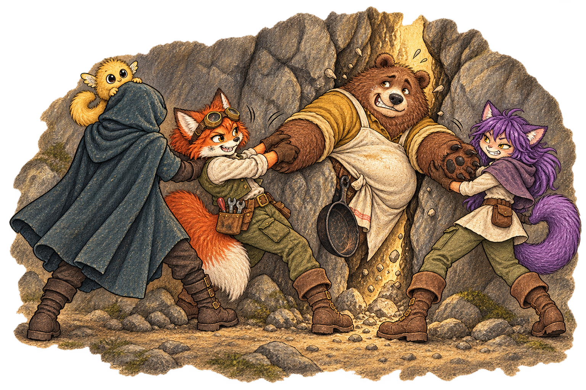
Download PNG · Tap the drawing to enlarge
Suggested placement · after paragraph 5
It takes all three of you pulling on his arms and one very unhappy minute, and then Bernard pops through like a cork out of a bottle and lands on top of everybody. He checks the pastries first. They’re fine.
Scene 054 · Approved
The Hollow Hills
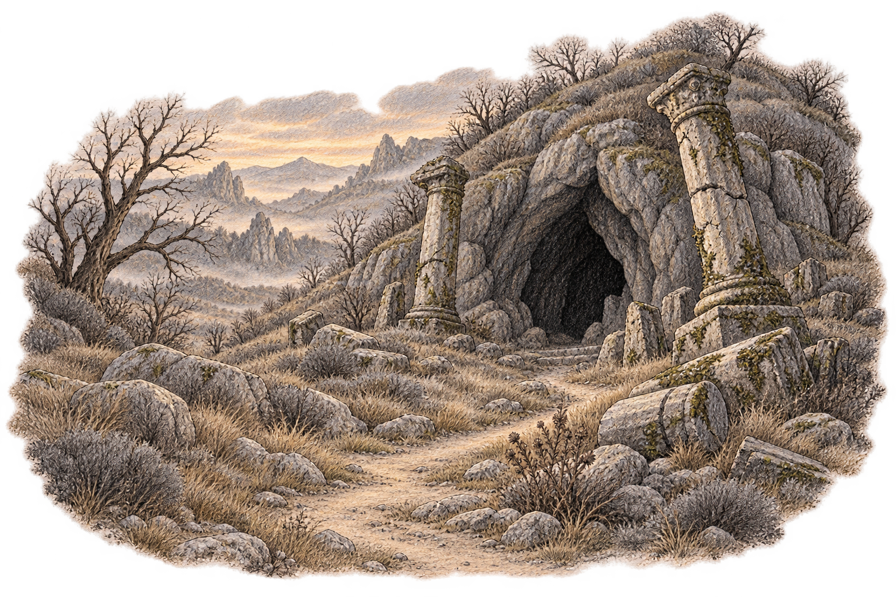
Download PNG · Tap the drawing to enlarge
Suggested placement · after paragraph 5
And then you see it. In the side of the biggest hill there’s a cave mouth as tall as a house, with broken stone pillars on either side.
Scene 055 · Approved
The Broken Door
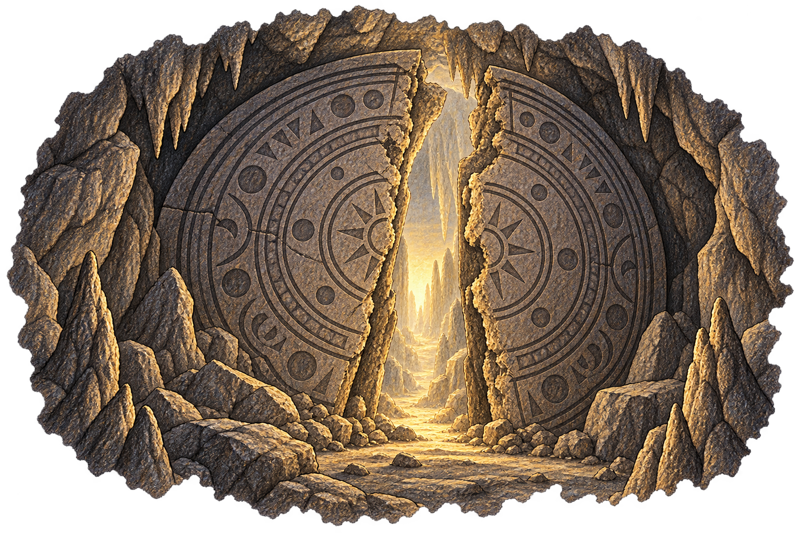
Download PNG · Tap the drawing to enlarge
Suggested placement · after paragraph 3
It used to be a door. It’s a huge round slab of stone twice as tall as Bernard, carved all over with symbols in rings inside of rings, just like the drawing in Elliana’s book. And it’s cracked right down the middle, the two halves leaning apart with a gap between them wide enough to walk through. The symbols must have glowed once, but now they’re dark.
Approved first batch
Scene 015 · Approved first batch
The Spell Lands
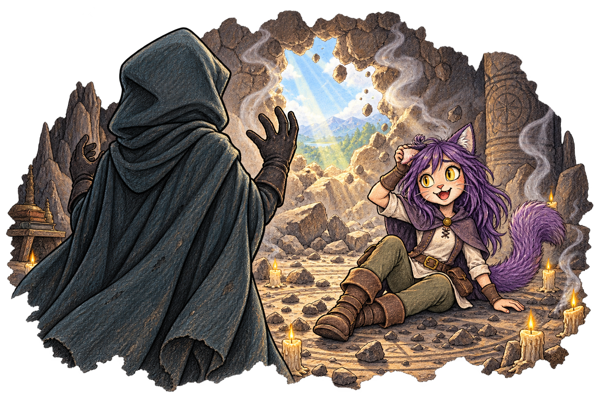
Download PNG · Tap the drawing to enlarge
Suggested placement · after paragraph 6
“I’m fine, I’m better than fine!” She scrambles up and now she’s laughing. “Do you know what the best mage in {world_name} can do right now? Light a lamp, if she’s had a good breakfast. And you just put a hole in a MOUNTAIN! The seers were right…they were really right!”
Scene 019 · Approved first batch
Trail to Town
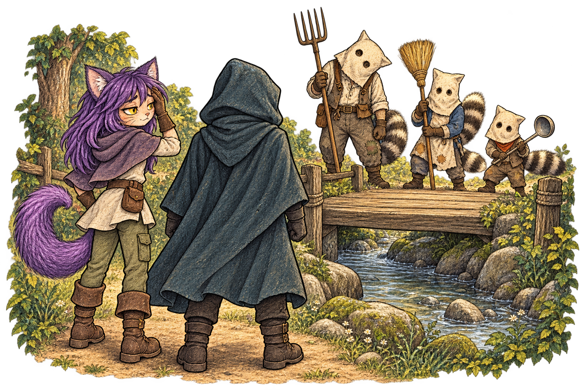
Download PNG · Tap the drawing to enlarge
Suggested placement · after paragraph 2
They’ve got long striped tails and flour sacks over their heads with eye holes cut in them, except one of them cut his eye holes in the wrong spot and has to keep turning his head sideways to see you. One has a pitchfork, one has a broom, and the smallest one is holding…a soup ladle?
Scene 034 · Approved first batch
Willowmere
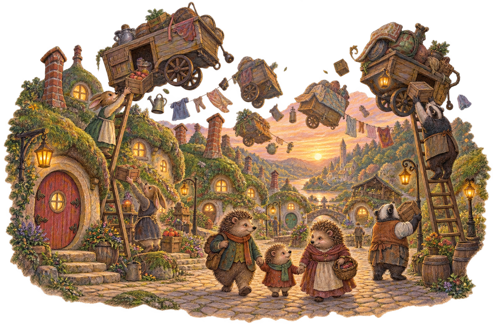
Download PNG · Tap the drawing to enlarge
Suggested placement · after paragraph 4
Washing lines are strung between the houses and the clothes on them are slowly turning round and round in the air, like they got stuck halfway through washing themselves. A long line of people with buckets stretches toward the middle of town, and the street lamps keep flickering on…and off…and on.
Scene 049 · Approved first batch
Small Magic
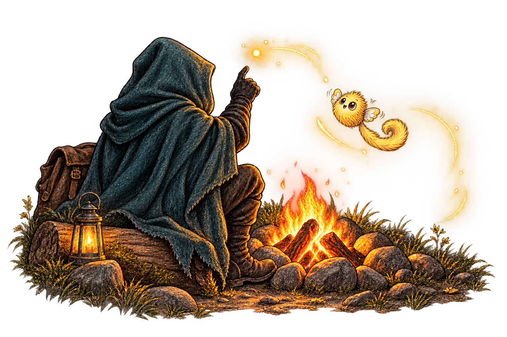
Download PNG · Tap the drawing to enlarge
Suggested placement · after paragraph 4
He launches out of your lap and chases the spark all the way around the campfire, trilling at the top of his lungs, catches it, eats it, does a loop in the air, then zooms back and hovers right in front of your face waiting for another one.